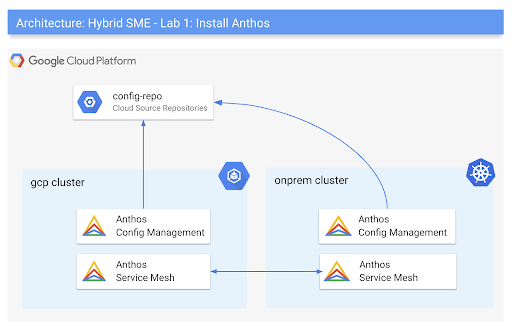
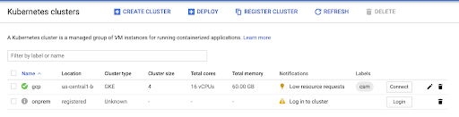
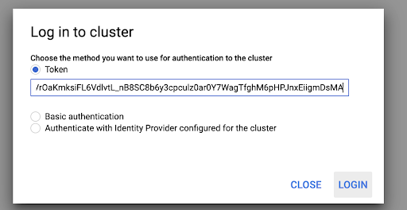
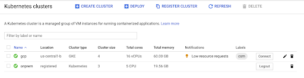
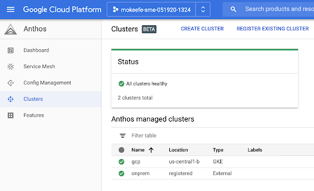
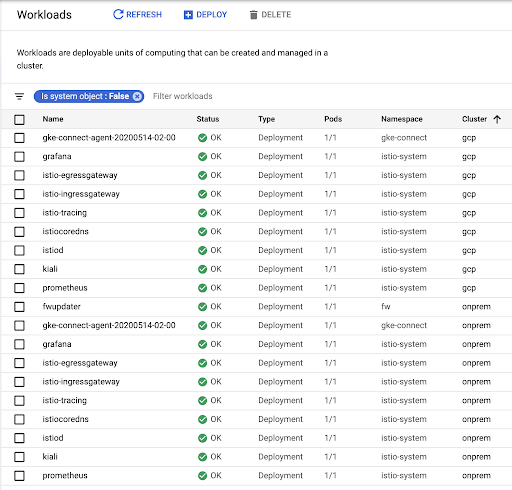
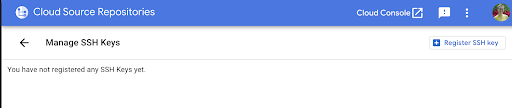
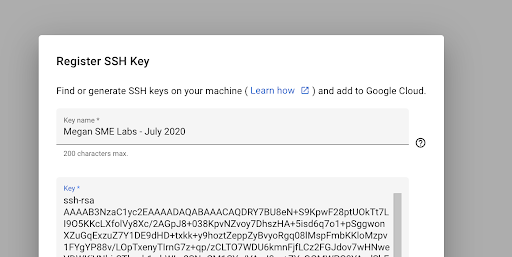
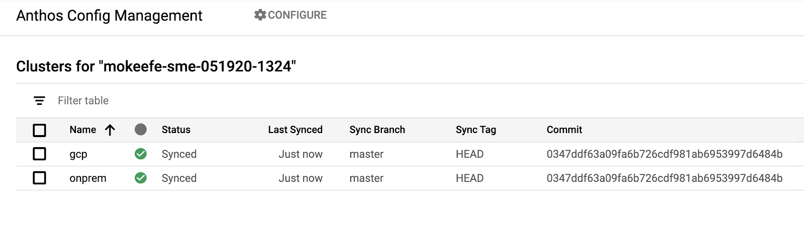

Welcome to the Anthos Workshop labs! Over the course of these labs, you will learn & explore how Anthos can help manage hybrid cloud environments with a consistent set of deployment environments and tools.
This first lab covers Anthos installation - creating multiple GKE clusters, then installing the Anthos components on those clusters. (We'll cover app deployments in the next lab.)
Throughout these labs, we will consider various tasks from the perpspective of various personna's. While each lab includes technical steps for installing, operating, and securing an Anthos environment, it's likely that within an organization, these tasks will be segmented and divided amongst different roles.
We'll cover app deployments in the next lab.
By the end of Lab 1, you will have your own GCP project with the following Anthos setup:

Because this lab takes you through Anthos and GKE installation, this lab falls into the Platform Engineer role.
These following prerequisites apply to this and all subsequent Anthos workshop Labs.
For the rest of the labs, anytime you see a black box like this, you should copy and paste the commands into your Cloud Shell terminal.
export DATE=`date +"%m%d%y-%H%M"`
export PROJECT_ID="${USER}-sme-${DATE}"
gcloud projects create ${PROJECT_ID}
gcloud config set project ${PROJECT_ID}
Take note of your new project ID (-sme-) and store it somewhere safe. You will use this same project throughout all the workshop labs.
export BILLING_ID="<your-id>"
gcloud alpha billing projects link $PROJECT_ID --billing-account $BILLING_ID
cd $HOME; mkdir -p hybrid-sme; cd hybrid-sme;
export ROOT=$HOME/hybrid-sme;
git clone https://github.com/GoogleCloudPlatform/bank-of-anthos-scripts; cd bank-of-anthos-scripts/install/
GCLOUD_ACCOUNT=$(gcloud config get-value account)
ssh-keygen -t rsa -b 4096 \
-C "$GCLOUD_ACCOUNT" \
-N '' \
-f $HOME/.ssh/id_rsa.sme
If your instructor indicates that the project has been already set-up for you in your environment you can skip this step.
This script provisions the clusters, installs multicluster Istio, and pre-installs the Anthos Config Management operator.
Note: this script takes ~10 minutes to run.
cd $ROOT/bank-of-anthos-scripts/install
source ./env
./bootstrap.sh
This script deploys the following into your project:
Note: While this first iteration of the Anthos workshop labs only covers the three core Anthos subproducts: GKE, ACM, and ASM (plus Cloud Build), know that Anthos has more integrations than what is covered in these labs.
When the script successfully completes, you should see a Kubernetes Service Account (KSA) token printed to stdout. Copy the token by simply selecting the text - a scissors icon will appear. Do not use CTRL-C or CMD-C.
#Example output - do not copy
eyJhbGciOiJSUzI1NiIsImtpZCI6InBXYTVfWGdBUGJlVUR6emxaaXlkMmJHcVI4WlMtb3N0RDhTSmdWcENVUFkifQ.eyJpc3MiOiJrdWJlcm5ldGVzL3NlcnZpY2VhY2NvdW50Iiwia3ViZXJuZXRlcy5pby9zZXJ2aWNlY....
Note: In case you did not proceed to the next step immediately, you can use the following command to retrieve the token:
printf "\n$(kubectl --kubeconfig=$ONPREM_KUBECONFIG describe secret $KSA | sed -ne 's/^token: *//p')\n\n"
In the Cloud Console, navigate to Kubernetes Engine. You should see two clusters - gcp and onprem. Next to the onprem cluster, you should see a warning icon, and a message: "Log in to cluster."

Next to the onprem cluster, click "Login," then select "Token" as the login method. Paste the token you copied from Cloud Shell and click "log in."

You should then see a green checkmark next to the onprem cluster, indicating that you have successfully logged in. Notice how the Cluster Type for the onprem cluster is "Kubernetes". This indicates that the onprem cluster is not GKE, but rather an open-source Kubernetes cluster we've registered to GCP as if it were a GKE cluster.

View the two registered Anthos clusters in the Anthos dashboard.
In the left Console sidebar, click Anthos > Clusters. You should see both clusters in the table - including the "registered" onprem cluster, and a message: "all clusters healthy."

View Kubernetes workloads across clusters by navigating to Kubernetes Engine > Workloads. View running workloads for both the onprem and gcp clusters. You should see workloads for gke-connect and Istio (Service mesh).

Anthos Config Management (ACM) is an agent running inside an Anthos cluster that "syncs" YAML configuration from a git repository. We'll use ACM later to unify configuration & policy governance across the two clusters. By default, ACM requires that your config repository is structured in a specific way to allow for hierarchical policy at the cluster and Kubernetes namespace-level. In this task, you'll set up the ACM configuration repo that will be synced to your two Anthos clusters.
gcloud alpha container hub config-management enable
Create a new Cloud Source repo called config-repo, clone to cloud shell, and initialize the repo structure. This will be the Git source of truth for config and policies synced across both clusters, through Anthos Config Management.
export PROJECT=$(gcloud config get-value project)
export GCLOUD_ACCOUNT=$(gcloud config get-value account)
export REPO_URL=https://source.developers.google.com/p/${PROJECT}/r/config-repo
export ROOT=$HOME/hybrid-sme;
git config credential.helper gcloud.sh
gcloud source repos create config-repo
cd $ROOT
gcloud source repos clone config-repo
cd $ROOT/config-repo
cp -r $ROOT/bank-of-anthos-scripts/install/acm/config-repo-source/* .
#Output - do not copy
Cloning into '/home/mokeefe/hybrid-sme/config-repo'...
warning: You appear to have cloned an empty repository.
Project [mokeefe-sme-070620-1410] repository [config-repo] was cloned to [/home/mokeefe/hybrid-sme/config-repo].
View the local contents of your config-repo. This directory structure is required by default in Anthos Config Management. Each sub-directory has a different purpose. For instance, we will create a directory under "namespaces," called "boa," which adds the namespace into which we'll deploy an application in Lab 2.
tree $ROOT/config-repo
#Output - do not copy
/home/mokeefe/hybrid-sme/config-repo
├── cluster
│ └── README.md
├── clusterregistry
│ ├── clusters.yaml
│ └── selectors.yaml
├── namespaces
│ ├── boa
│ │ └── namespace.yaml
│ └── README.md
└── system
└── repo.yaml
5 directories, 6 files
Set your git credentials.
git config --global user.email ${USER}@"your domain"
git config --global user.name ${USER}
Push the contents of config-repo to Cloud Source Repositories.
cd $ROOT/config-repo
git add .
git commit -m "Initialize config-repo"
git push -u origin master
Output - do not copy
Enumerating objects: 13, done.
Counting objects: 100% (13/13), done.
Delta compression using up to 2 threads
Compressing objects: 100% (10/10), done.
Writing objects: 100% (13/13), 1.48 KiB | 757.00 KiB/s, done.
Total 13 (delta 3), reused 0 (delta 0)
remote: Resolving deltas: 100% (3/3)
To https://source.developers.google.com/p/mokeefe-sme-070620-1410/r/config-repo
* [new branch] master -> master
Branch 'master' set up to track remote branch 'master' from 'origin'.
Allow ACM to view the repo, by mounting an ssh key as a secret into both clusters.
Throughout these labs, you will use the kubectx tool which allows you to easily switch between different Kubernetes cluster contexts.
kubectx gcp
kubectl create secret generic git-creds \
--namespace=config-management-system \
--from-file=ssh=$HOME/.ssh/id_rsa.sme
kubectx onprem
kubectl create secret generic git-creds \
--namespace=config-management-system \
--from-file=ssh=$HOME/.ssh/id_rsa.sme
Copy the ssh key to your clipboard by selecting the text until a scissors icon appears. do not use cmd-c to copy.
cat $HOME/.ssh/id_rsa.sme.pub
In a new browser tab, navigate to: https://source.cloud.google.com/user/ssh_keys, then click "Register SSH key"

Name the key anything you'd like - then paste the key, starting with "ssh-rsa", you just copied. Then click "Register"
Note: this key is registered to your GCP account, not your project.

Configure the config sync agent on both clusters, to watch your new config-repo.
export BASE_DIR="$ROOT/bank-of-anthos-scripts/install"
export ONPREM=onprem
export GCP=gcp
REPO_URL=ssh://${GCLOUD_ACCOUNT}@source.developers.google.com:2022/p/${PROJECT}/r/config-repo
kubectx $ONPREM
cat $BASE_DIR/acm/config_sync.yaml | \
sed 's|<REPO_URL>|'"$REPO_URL"'|g' | \
sed 's|<CLUSTER_NAME>|'"$ONPREM"'|g' | \
sed 's|none|ssh|g' | \
kubectl apply -f -
kubectx $GCP
cat $BASE_DIR/acm/config_sync.yaml | \
sed 's|<REPO_URL>|'"$REPO_URL"'|g' | \
sed 's|<CLUSTER_NAME>|'"$GCP"'|g' | \
sed 's|none|ssh|g' | \
kubectl apply -f -
#Output - do not copy
configmanagement.configmanagement.gke.io/config-management created
The "nomos" command-line tool checks each cluster's ACM sync status against the config repo. nomos status tells you what Git commit token each cluster is synced to.
The nomos command was installed to your environment when the bootstrap script ran in Task 3. If you want to manually install nomos to your local environment, you can download it here.
watch nomos status
Within a few minutes, you should see the git sync status move from UNKNOWN, to PENDING, to SYNCED. You may also see an "ERROR" status for the first few minutes (no endpoints available for service "gatekeeper-webhook-service") - this is normal, and indicates that the ACM pods are still starting up.
You should eventually see a SYNCED status for both clusters. The "Last Synced Token" is the git commit ID for the config-repo git push you just did.
#Output - do not copy
Connecting to clusters...
Current Context Status Last Synced Token Sync Branch
------- ------- ------ ----------------- -----------
gcp SYNCED 71cbe02a master
* onprem SYNCED 71cbe02a master
View the ACM status in the Cloud Console
This is another way to view the git sync status. Navigate to Anthos > Config Management. This table displays the same status you would see if you ran nomos status.

Get namespaces on both clusters.
You should see a new namespace, called boa ("Bank of Anthos") synced to both clusters via ACM. "boa" is the application namespace you will use in this training, centrally administered with ACM. In the next lab, you will use Cloud Build to deploy a sample application into the "boa" namespace on both clusters - then later, you'll use ACM to enforce policies for the developers deploying into this namespace.
kubectx gcp
kubectl get ns
kubectx onprem
kubectl get ns
#Output - do not copy
NAME STATUS AGE
config-management-system Active 50m
default Active 52m
boa Active 38s
...
Congratulations! You just installed the core Anthos components on your GCP project. Now you're ready to deploy an application onto your simulated hybrid cloud environment.
If you have to pause this lab and return to it later - or if your Cloud Shell becomes disconnected, re-open or refresh the Cloud Shell page. Once you are connected, execute the following commands:
export PROJECT_ID=<your-sme-project-id>
gcloud config set project $PROJECT_ID
cd $HOME/hybrid-sme/bank-of-anthos-scripts/install
source ./env
source ./common/install-tools.sh